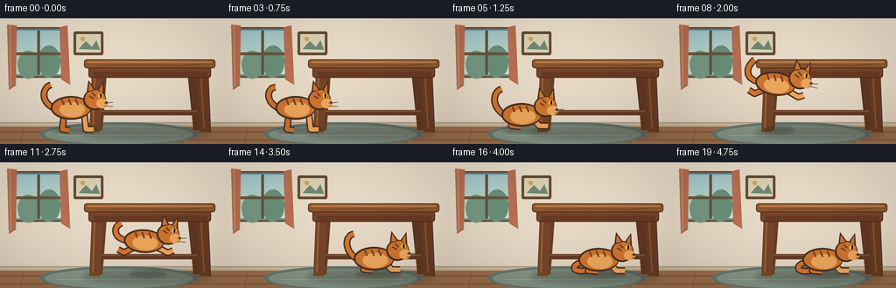
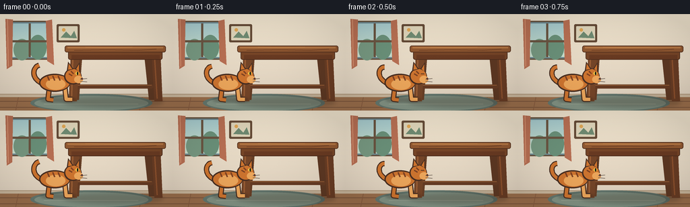

CODING AGENTS AS PIXEL WORLD MODELS
traex/GPT-5.6-Sol · dynamic_spatial_relationship_0008
点击播放 · 原生 RGB 像素
逐轮保存的候选
回放视频、检查图与代码变化。
每份候选均可单独播放。实际图片检查记录在下方工具轨迹中。
候选 01播放与检查图
点击播放 · 原生 RGB 像素


展开代码变化
--- 上一保存版本
+++ 本次保存版本
@@ -0,0 +1,223 @@
+from pathlib import Path
+import math
+import numpy as np
+from PIL import Image, ImageDraw, ImageFilter
+import artifact_io
+
+W,H,N = 256,144,20
+S=4
+
+def sc(v): return int(round(v*S))
+def box(b): return tuple(sc(v) for v in b)
+def pts(p): return [(sc(x),sc(y)) for x,y in p]
+
+def lerp(a,b,t): return a+(b-a)*t
+def smooth(t):
+ t=max(0,min(1,t)); return t*t*(3-2*t)
+
+def ellipse(d,b,fill,outline=None,width=1): d.ellipse(box(b),fill=fill,outline=outline,width=sc(width))
+def poly(d,p,fill,outline=None): d.polygon(pts(p),fill=fill,outline=outline)
+def line(d,p,fill,width=1,joint='curve'): d.line(pts(p),fill=fill,width=sc(width),joint=joint)
+def rr(d,b,r,fill,outline=None,width=1): d.rounded_rectangle(box(b),radius=sc(r),fill=fill,outline=outline,width=sc(width))
+
+def cubic(p0,p1,p2,p3,n=20):
+ out=[]
+ for i in range(n):
+ t=i/(n-1); u=1-t
+ out.append((u**3*p0[0]+3*u*u*t*p1[0]+3*u*t*t*p2[0]+t**3*p3[0],
+ u**3*p0[1]+3*u*u*t*p1[1]+3*u*t*t*p2[1]+t**3*p3[1]))
+ return out
+
+def draw_room(im,frame):
+ d=ImageDraw.Draw(im)
+ # warm wall gradient
+ for y in range(sc(0),sc(123)):
+ yy=y/(S*123)
+ col=(int(238-13*yy),int(226-15*yy),int(204-12*yy))
+ d.line([(0,y),(sc(W),y)],fill=col)
+ # wall panel shadow and baseboard
+ d.rectangle(box((0,119,256,124)),fill=(202,183,157))
+ d.rectangle(box((0,119,256,120)),fill=(176,153,124))
+ # left window, distant cool outdoor light
+ rr(d,(13,10,76,68),3,(109,137,145),(102,82,62),2)
+ d.rectangle(box((17,14,72,64)),fill=(178,206,204))
+ # sky gradient lines
+ for y in range(sc(14),sc(64)):
+ q=(y/S-14)/50
+ d.line([(sc(17),y),(sc(72),y)],fill=(int(166+34*q),int(202+19*q),int(205-3*q)))
+ # soft tree silhouettes
+ ellipse(d,(20,37,45,69),(118,151,128)); ellipse(d,(43,31,69,68),(106,144,121))
+ d.rectangle(box((42.5,14,45.5,64)),fill=(105,84,65)); d.rectangle(box((17,39,72,42)),fill=(105,84,65))
+ # curtain
+ poly(d,[(8,7),(19,8),(18,77),(10,82)],(183,111,83))
+ line(d,[(11,8),(12,78)],(218,151,117),1)
+ poly(d,[(77,8),(68,10),(70,70),(80,76)],(183,111,83))
+ # framed picture
+ rr(d,(84,15,118,42),2,(100,74,54))
+ rr(d,(87,18,115,39),1,(221,211,184))
+ poly(d,[(90,35),(98,26),(105,33),(110,25),(114,36)],(111,138,113))
+ ellipse(d,(92,21,97,26),(222,165,84))
+ # floor planks
+ d.rectangle(box((0,124,256,144)),fill=(155,111,76))
+ for y in (130,139): line(d,[(0,y),(256,y)],(118,82,58),1)
+ for x in (27,88,149,211): line(d,[(x,124),(x-4,144)],(134,91,63),1)
+ # oval rug
+ ellipse(d,(45,119,226,146),(101,120,111))
+ ellipse(d,(51,122,220,144),(132,148,133))
+ # little rug stitch lines
+ line(d,[(65,134),(205,134)],(154,166,148),1)
+
+
+def draw_table(im):
+ d=ImageDraw.Draw(im)
+ # soft grounding shadows
+ sh=Image.new('RGBA',im.size,(0,0,0,0)); sd=ImageDraw.Draw(sh)
+ sd.ellipse(box((94,123,242,139)),fill=(50,37,26,65)); sh=sh.filter(ImageFilter.GaussianBlur(sc(3)))
+ im.alpha_composite(sh)
+ d=ImageDraw.Draw(im)
+ # back legs first
+ poly(d,[(214,61),(226,61),(231,128),(221,128)],(93,56,35))
+ poly(d,[(111,61),(122,61),(117,128),(107,128)],(104,63,38))
+ # lower stretcher gives clear furniture structure
+ rr(d,(112,105,227,111),2,(101,59,36))
+ line(d,[(115,106),(225,106)],(151,95,54),1)
+ # front legs with highlights
+ poly(d,[(105,58),(118,58),(114,130),(102,130)],(116,69,40))
+ poly(d,[(225,58),(238,58),(241,130),(229,130)],(104,60,36))
+ line(d,[(108,62),(106,126)],(154,94,53),2)
+ line(d,[(229,62),(233,126)],(139,80,45),2)
+ # apron and top
+ rr(d,(101,52,241,68),3,(118,69,39),(78,46,30),1)
+ d.rectangle(box((106,61,237,67)),fill=(104,58,34))
+ rr(d,(96,47,246,57),3,(144,88,49),(83,49,31),1)
+ d.rectangle(box((100,49,242,51)),fill=(181,120,69))
+ # grain
+ line(d,[(110,54),(160,53),(204,54),(232,52)],(105,60,36),1)
+ line(d,[(127,49),(164,50),(196,49)],(193,132,76),1)
+
+
+def cat_pose(i):
+ # Start visibly in front of the table, crouch, leap rightward, land underneath.
+ if i <= 3:
+ return dict(cx=86+0.25*i, cy=103, angle=0, phase='stand', p=i/3)
+ if i <= 5:
+ t=smooth((i-3)/2)
+ return dict(cx=87+2*t,cy=103+5*t,angle=0,phase='crouch',p=t)
+ if i <= 12:
+ t=(i-5)/7
+ cx=lerp(89,174,smooth(t))
+ cy=108-31*math.sin(math.pi*t)-4*t
+ angle=-8*math.sin(math.pi*t)
+ return dict(cx=cx,cy=cy,angle=angle,phase='jump',p=t)
+ if i <= 15:
+ t=smooth((i-12)/3)
+ return dict(cx=174+3*t,cy=104+5*t,angle=0,phase='land',p=t)
+ return dict(cx=177,cy=109,angle=0,phase='settle',p=(i-15)/4)
+
+
+def draw_cat(im,i,pose):
+ cx,cy=pose['cx'],pose['cy']; ph=pose['phase']; p=pose['p']
+ # cat shadow, follows the floor while airborne shadow shrinks
+ shadow=Image.new('RGBA',im.size,(0,0,0,0)); sd=ImageDraw.Draw(shadow)
+ if ph=='jump':
+ floorx=lerp(89,174,smooth(p)); size=lerp(25,17,math.sin(math.pi*p))
+ else: floorx=cx; size=27
+ sd.ellipse(box((floorx-size,124,floorx+size,132)),fill=(42,32,24,75))
+ shadow=shadow.filter(ImageFilter.GaussianBlur(sc(2))); im.alpha_composite(shadow)
+
+ # Draw cat locally then rotate around transparent layer; local coordinates body centre (0,0)
+ L=Image.new('RGBA',(sc(90),sc(82)),(0,0,0,0)); d=ImageDraw.Draw(L)
+ ox,oy=sc(42),sc(38)
+ def P(x,y): return (ox+sc(x),oy+sc(y))
+ def B(a,b,c,e): return (ox+sc(a),oy+sc(b),ox+sc(c),oy+sc(e))
+ fur=(205,116,47,255); light=(236,166,91,255); dark=(126,66,35,255); outline=(73,47,34,255)
+ # pose compression/stretch
+ crouch = ph in ('crouch','land','settle')
+ airborne = ph=='jump'
+ body_y=3 if crouch else 0
+ # tail behind body: expressive curved tail
+ wag=math.sin(i*.65)*3
+ if airborne:
+ tp=cubic((-22,body_y),(-39,-2),(-37,-17),(-29,-22+wag),18)
+ elif ph=='settle':
+ tp=cubic((-20,body_y+2),(-36,9),(-31,18),(-16,15+wag*.25),18)
+ else:
+ tp=cubic((-21,body_y),(-37,-7),(-35,-24),(-25,-27+wag),18)
+ d.line([P(x,y) for x,y in tp],fill=outline,width=sc(8),joint='curve')
+ d.line([P(x,y) for x,y in tp],fill=fur,width=sc(5),joint='curve')
+ # rear and front legs, change clearly during leap
+ if airborne:
+ # back legs stretched backward, forelegs reach toward destination
+ d.line([P(-12,7),P(-24,14),P(-31,11)],fill=outline,width=sc(8),joint='curve')
+ d.line([P(-12,7),P(-24,14),P(-31,11)],fill=fur,width=sc(5),joint='curve')
+ d.line([P(12,5),P(26,11),P(32,8)],fill=outline,width=sc(8),joint='curve')
+ d.line([P(12,5),P(26,11),P(32,8)],fill=light,width=sc(5),joint='curve')
+ elif crouch:
+ # paws tucked low in a compact landing crouch
+ d.line([P(-10,8),P(-14,15),P(-3,16)],fill=outline,width=sc(8),joint='curve')
+ d.line([P(-10,8),P(-14,15),P(-3,16)],fill=fur,width=sc(5),joint='curve')
+ d.line([P(12,8),P(18,15),P(28,15)],fill=outline,width=sc(8),joint='curve')
+ d.line([P(12,8),P(18,15),P(28,15)],fill=light,width=sc(5),joint='curve')
+ else:
+ d.line([P(-10,7),P(-12,24),P(-4,25)],fill=outline,width=sc(8),joint='curve')
+ d.line([P(-10,7),P(-12,24),P(-4,25)],fill=fur,width=sc(5),joint='curve')
+ d.line([P(13,6),P(15,24),P(24,24)],fill=outline,width=sc(8),joint='curve')
+ d.line([P(13,6),P(15,24),P(24,24)],fill=light,width=sc(5),joint='curve')
+ # torso
+ d.ellipse(B(-25,-14+body_y,21,13+body_y),fill=outline)
+ d.ellipse(B(-23,-12+body_y,20,11+body_y),fill=fur)
+ d.ellipse(B(-15,-7+body_y,14,10+body_y),fill=light)
+ # tabby stripes
+ for x in (-13,-5,3):
+ d.line([P(x,-11+body_y),P(x+3,-4+body_y)],fill=dark,width=sc(2))
+ # neck and head on right
+ hy=-12 + (3 if crouch else 0)
+ d.ellipse(B(12,hy-10,38,hy+14),fill=outline)
+ d.ellipse(B(14,hy-9,37,hy+12),fill=fur)
+ # ears
+ d.polygon([P(16,hy-6),P(18,hy-20),P(26,hy-9)],fill=outline)
+ d.polygon([P(18,hy-8),P(19,hy-17),P(24,hy-9)],fill=fur)
+ d.polygon([P(28,hy-9),P(35,hy-19),P(36,hy-5)],fill=outline)
+ d.polygon([P(30,hy-9),P(34,hy-16),P(34,hy-6)],fill=fur)
+ # muzzle and face
+ d.ellipse(B(27,hy+1,40,hy+12),fill=light)
+ blink=(i==2 or i==18)
+ if blink:
+ d.line([P(29,hy-2),P(34,hy-2)],fill=outline,width=sc(1))
+ else:
+ d.ellipse(B(29,hy-5,34,hy),fill=(242,203,74,255)); d.ellipse(B(31,hy-5,33,hy),fill=(29,29,23,255))
+ d.ellipse(B(37,hy+4,40,hy+7),fill=(86,46,43,255))
+ # whiskers
+ for yy,dy in ((hy+6,-1),(hy+9,1)):
+ d.line([P(36,yy),P(46,yy+dy)],fill=(78,64,54,210),width=sc(1))
+ # cheek stripe
+ d.line([P(22,hy-6),P(26,hy-2)],fill=dark,width=sc(2))
+ d.line([P(19,hy-2),P(24,hy+1)],fill=dark,width=sc(2))
+
+ # rotate and composite so body direction stays facing right
+ ang=pose.get('angle',0)
+ if abs(ang)>0.01: L=L.rotate(ang,resample=Image.Resampling.BICUBIC,expand=False)
+ x=sc(cx)-L.width//2; y=sc(cy)-oy
+ im.alpha_composite(L,(x,y))
+
+
+def make_frame(i):
+ im=Image.new('RGBA',(W*S,H*S),(0,0,0,255))
+ draw_room(im,i)
+ draw_table(im)
+ pose=cat_pose(i)
+ draw_cat(im,i,pose)
+ # warm vignette and faint film grain for a polished illustrated look
+ arr=np.asarray(im.convert('RGB')).astype(np.float32)
+ yy,xx=np.mgrid[0:H*S,0:W*S]
+ dx=(xx-W*S/2)/(W*S/2); dy=(yy-H*S/2)/(H*S/2)
+ vig=np.clip(1-0.075*(dx*dx+dy*dy),.89,1)[...,None]
+ arr*=vig
+ # deterministic, extremely subtle texture
+ rng=np.random.default_rng(900+i)
+ arr += rng.normal(0,0.55,arr.shape[:2])[...,None]
+ im=Image.fromarray(np.uint8(np.clip(arr,0,255)),'RGB').resize((W,H),Image.Resampling.LANCZOS)
+ return np.asarray(im,dtype=np.uint8)
+
+frames=np.stack([make_frame(i) for i in range(N)],axis=0)
+artifact_io.save(frames,Path(__file__).resolve().parent)
可观测工具轨迹
实际执行的命令与返回图片。
命令 1exit 0
/bin/bash -lc "cat prompt.txt && printf '\\n---RULES---\\n' && cat GENERATION_RULES.md && printf '\\n---SPEC---\\n' && cat task_spec.json"
命令 2exit 0
/bin/bash -lc "find . -maxdepth 2 -type f -printf '%p\\n' | sort && printf '\\nTools:\\n' && command -v ffmpeg || true && command -v python3 || true"
命令 3exit 0
/bin/bash -lc 'cat artifact_io.py'
命令 4exit 0
/bin/bash -lc "cat > generate.py <<'PY'
from pathlib import Path
import math
import numpy as np
from PIL import Image, ImageDraw, ImageFilter
import artifact_io
W,H,N = 256,144,20
S=4
def sc(v): return int(round(v*S))
def box(b): return tuple(sc(v) for v in b)
def pts(p): return [(sc(x),sc(y)) for x,y in p]
def lerp(a,b,t): return a+(b-a)*t
def smooth(t):
t=max(0,min(1,t)); return t*t*(3-2*t)
def ellipse(d,b,fill,outline=None,width=1): d.ellipse(box(b),fill=fill,outline=outline,width=sc(width))
def poly(d,p,fill,outline=None): d.polygon(pts(p),fill=fill,outline=outline)
def line(d,p,fill,width=1,joint='curve'): d.line(pts(p),fill=fill,width=sc(width),joint=joint)
def rr(d,b,r,fill,outline=None,width=1): d.rounded_rectangle(box(b),radius=sc(r),fill=fill,outline=outline,width=sc(width))
def cubic(p0,p1,p2,p3,n=20):
out=[]
for i in range(n):
t=i/(n-1); u=1-t
out.append((u**3*p0[0]+3*u*u*t*p1[0]+3*u*t*t*p2[0]+t**3*p3[0],
u**3*p0[1]+3*u*u*t*p1[1]+3*u*t*t*p2[1]+t**3*p3[1]))
return out
def draw_room(im,frame):
d=ImageDraw.Draw(im)
# warm wall gradient
for y in range(sc(0),sc(123)):
yy=y/(S*123)
col=(int(238-13*yy),int(226-15*yy),int(204-12*yy))
d.line([(0,y),(sc(W),y)],fill=col)
# wall panel shadow and baseboard
d.rectangle(box((0,119,256,124)),fill=(202,183,157))
d.rectangle(box((0,119,256,120)),fill=(176,153,124))
# left window, distant cool outdoor light
rr(d,(13,10,76,68),3,(109,137,145),(102,82,62),2)
d.rectangle(box((17,14,72,64)),fill=(178,206,204))
# sky gradient lines
for y in range(sc(14),sc(64)):
q=(y/S-14)/50
d.line([(sc(17),y),(sc(72),y)],fill=(int(166+34*q),int(202+19*q),int(205-3*q)))
# soft tree silhouettes
ellipse(d,(20,37,45,69),(118,151,128)); ellipse(d,(43,31,69,68),(106,144,121))
d.rectangle(box((42.5,14,45.5,64)),fill=(105,84,65)); d.rectangle(box((17,39,72,42)),fill=(105,84,65))
# curtain
poly(d,[(8,7),(19,8),(18,77),(10,82)],(183,111,83))
line(d,[(11,8),(12,78)],(218,151,117),1)
poly(d,[(77,8),(68,10),(70,70),(80,76)],(183,111,83))
# framed picture
rr(d,(84,15,118,42),2,(100,74,54))
rr(d,(87,18,115,39),1,(221,211,184))
poly(d,[(90,35),(98,26),(105,33),(110,25),(114,36)],(111,138,113))
ellipse(d,(92,21,97,26),(222,165,84))
# floor planks
d.rectangle(box((0,124,256,144)),fill=(155,111,76))
for y in (130,139): line(d,[(0,y),(256,y)],(118,82,58),1)
for x in (27,88,149,211): line(d,[(x,124),(x-4,144)],(134,91,63),1)
# oval rug
ellipse(d,(45,119,226,146),(101,120,111))
ellipse(d,(51,122,220,144),(132,148,133))
# little rug stitch lines
line(d,[(65,134),(205,134)],(154,166,148),1)
def draw_table(im):
d=ImageDraw.Draw(im)
# soft grounding shadows
sh=Image.new('RGBA',im.size,(0,0,0,0)); sd=ImageDraw.Draw(sh)
sd.ellipse(box((94,123,242,139)),fill=(50,37,26,65)); sh=sh.filter(ImageFilter.GaussianBlur(sc(3)))
im.alpha_composite(sh)
d=ImageDraw.Draw(im)
# back legs first
poly(d,[(214,61),(226,61),(231,128),(221,128)],(93,56,35))
poly(d,[(111,61),(122,61),(117,128),(107,128)],(104,63,38))
# lower stretcher gives clear furniture structure
rr(d,(112,105,227,111),2,(101,59,36))
line(d,[(115,106),(225,106)],(151,95,54),1)
# front legs with highlights
poly(d,[(105,58),(118,58),(114,130),(102,130)],(116,69,40))
poly(d,[(225,58),(238,58),(241,130),(229,130)],(104,60,36))
line(d,[(108,62),(106,126)],(154,94,53),2)
line(d,[(229,62),(233,126)],(139,80,45),2)
# apron and top
rr(d,(101,52,241,68),3,(118,69,39),(78,46,30),1)
d.rectangle(box((106,61,237,67)),fill=(104,58,34))
rr(d,(96,47,246,57),3,(144,88,49),(83,49,31),1)
d.rectangle(box((100,49,242,51)),fill=(181,120,69))
# grain
line(d,[(110,54),(160,53),(204,54),(232,52)],(105,60,36),1)
line(d,[(127,49),(164,50),(196,49)],(193,132,76),1)
def cat_pose(i):
# Start visibly in front of the table, crouch, leap rightward, land underneath.
if i <= 3:
return dict(cx=86+0.25*i, cy=103, angle=0, phase='stand', p=i/3)
if i <= 5:
t=smooth((i-3)/2)
return dict(cx=87+2*t,cy=103+5*t,angle=0,phase='crouch',p=t)
if i <= 12:
t=(i-5)/7
cx=lerp(89,174,smooth(t))
cy=108-31*math.sin(math.pi*t)-4*t
angle=-8*math.sin(math.pi*t)
return dict(cx=cx,cy=cy,angle=angle,phase='jump',p=t)
if i <= 15:
t=smooth((i-12)/3)
return dict(cx=174+3*t,cy=104+5*t,angle=0,phase='land',p=t)
return dict(cx=177,cy=109,angle=0,phase='settle',p=(i-15)/4)
def draw_cat(im,i,pose):
cx,cy=pose['cx'],pose['cy']; ph=pose['phase']; p=pose['p']
# cat shadow, follows the floor while airborne shadow shrinks
shadow=Image.new('RGBA',im.size,(0,0,0,0)); sd=ImageDraw.Draw(shadow)
if ph=='jump':
floorx=lerp(89,174,smooth(p)); size=lerp(25,17,math.sin(math.pi*p))
else: floorx=cx; size=27
sd.ellipse(box((floorx-size,124,floorx+size,132)),fill=(42,32,24,75))
shadow=shadow.filter(ImageFilter.GaussianBlur(sc(2))); im.alpha_composite(shadow)
# Draw cat locally then rotate around transparent layer; local coordinates body centre (0,0)
L=Image.new('RGBA',(sc(90),sc(82)),(0,0,0,0)); d=ImageDraw.Draw(L)
ox,oy=sc(42),sc(38)
def P(x,y): return (ox+sc(x),oy+sc(y))
def B(a,b,c,e): return (ox+sc(a),oy+sc(b),ox+sc(c),oy+sc(e))
fur=(205,116,47,255); light=(236,166,91,255); dark=(126,66,35,255); outline=(73,47,34,255)
# pose compression/stretch
crouch = ph in ('crouch','land','settle')
airborne = ph=='jump'
body_y=3 if crouch else 0
# tail behind body: expressive curved tail
wag=math.sin(i*.65)*3
if airborne:
tp=cubic((-22,body_y),(-39,-2),(-37,-17),(-29,-22+wag),18)
elif ph=='settle':
tp=cubic((-20,body_y+2),(-36,9),(-31,18),(-16,15+wag*.25),18)
else:
tp=cubic((-21,body_y),(-37,-7),(-35,-24),(-25,-27+wag),18)
d.line([P(x,y) for x,y in tp],fill=outline,width=sc(8),joint='curve')
d.line([P(x,y) for x,y in tp],fill=fur,width=sc(5),joint='curve')
# rear and front legs, change clearly during leap
if airborne:
# back legs stretched backward, forelegs reach toward destination
d.line([P(-12,7),P(-24,14),P(-31,11)],fill=outline,width=sc(8),joint='curve')
d.line([P(-12,7),P(-24,14),P(-31,11)],fill=fur,width=sc(5),joint='curve')
d.line([P(12,5),P(26,11),P(32,8)],fill=outline,width=sc(8),joint='curve')
d.line([P(12,5),P(26,11),P(32,8)],fill=light,width=sc(5),joint='curve')
elif crouch:
# paws tucked low in a compact landing crouch
d.line([P(-10,8),P(-14,15),P(-3,16)],fill=outline,width=sc(8),joint='curve')
d.line([P(-10,8),P(-14,15),P(-3,16)],fill=fur,width=sc(5),joint='curve')
d.line([P(12,8),P(18,15),P(28,15)],fill=outline,width=sc(8),joint='curve')
d.line([P(12,8),P(18,15),P(28,15)],fill=light,width=sc(5),joint='curve')
else:
d.line([P(-10,7),P(-12,24),P(-4,25)],fill=outline,width=sc(8),joint='curve')
d.line([P(-10,7),P(-12,24),P(-4,25)],fill=fur,width=sc(5),joint='curve')
d.line([P(13,6),P(15,24),P(24,24)],fill=outline,width=sc(8),joint='curve')
d.line([P(13,6),P(15,24),P(24,24)],fill=light,width=sc(5),joint='curve')
# torso
d.ellipse(B(-25,-14+body_y,21,13+body_y),fill=outline)
d.ellipse(B(-23,-12+body_y,20,11+body_y),fill=fur)
d.ellipse(B(-15,-7+body_y,14,10+body_y),fill=light)
# tabby stripes
for x in (-13,-5,3):
d.line([P(x,-11+body_y),P(x+3,-4+body_y)],fill=dark,width=sc(2))
# neck and head on right
hy=-12 + (3 if crouch else 0)
d.ellipse(B(12,hy-10,38,hy+14),fill=outline)
d.ellipse(B(14,hy-9,37,hy+12),fill=fur)
# ears
d.polygon([P(16,hy-6),P(18,hy-20),P(26,hy-9)],fill=outline)
d.polygon([P(18,hy-8),P(19,hy-17),P(24,hy-9)],fill=fur)
d.polygon([P(28,hy-9),P(35,hy-19),P(36,hy-5)],fill=outline)
d.polygon([P(30,hy-9),P(34,hy-16),P(34,hy-6)],fill=fur)
# muzzle and face
d.ellipse(B(27,hy+1,40,hy+12),fill=light)
blink=(i==2 or i==18)
if blink:
d.line([P(29,hy-2),P(34,hy-2)],fill=outline,width=sc(1))
else:
d.ellipse(B(29,hy-5,34,hy),fill=(242,203,74,255)); d.ellipse(B(31,hy-5,33,hy),fill=(29,29,23,255))
d.ellipse(B(37,hy+4,40,hy+7),fill=(86,46,43,255))
# whiskers
for yy,dy in ((hy+6,-1),(hy+9,1)):
d.line([P(36,yy),P(46,yy+dy)],fill=(78,64,54,210),width=sc(1))
# cheek stripe
d.line([P(22,hy-6),P(26,hy-2)],fill=dark,width=sc(2))
d.line([P(19,hy-2),P(24,hy+1)],fill=dark,width=sc(2))
# rotate and composite so body direction stays facing right
ang=pose.get('angle',0)
if abs(ang)>0.01: L=L.rotate(ang,resample=Image.Resampling.BICUBIC,expand=False)
x=sc(cx)-L.width//2; y=sc(cy)-oy
im.alpha_composite(L,(x,y))
def make_frame(i):
im=Image.new('RGBA',(W*S,H*S),(0,0,0,255))
draw_room(im,i)
draw_table(im)
pose=cat_pose(i)
draw_cat(im,i,pose)
# warm vignette and faint film grain for a polished illustrated look
arr=np.asarray(im.convert('RGB')).astype(np.float32)
yy,xx=np.mgrid[0:H*S,0:W*S]
dx=(xx-W*S/2)/(W*S/2); dy=(yy-H*S/2)/(H*S/2)
vig=np.clip(1-0.075*(dx*dx+dy*dy),.89,1)[...,None]
arr*=vig
# deterministic, extremely subtle texture
rng=np.random.default_rng(900+i)
arr += rng.normal(0,0.55,arr.shape[:2])[...,None]
im=Image.fromarray(np.uint8(np.clip(arr,0,255)),'RGB').resize((W,H),Image.Resampling.LANCZOS)
return np.asarray(im,dtype=np.uint8)
frames=np.stack([make_frame(i) for i in range(N)],axis=0)
artifact_io.save(frames,Path(__file__).resolve().parent)
PY
python3 generate.py
ls -l pixels.npz inspection.png frames/00.png frames/19.png"命令 5exit 0
/bin/bash -lc "python3 - <<'PY'
import numpy as np
from PIL import Image
z=np.load('pixels.npz')['pixels']
print('packed tensor',z.shape,z.dtype,'unique frames',len({z[:,:,i].tobytes() for i in range(z.shape[2])}))
frames=np.stack([np.array(Image.open(f'frames/{i:02d}.png')) for i in range(20)])
print('RGB frames',frames.shape,frames.dtype,'range',frames.min(),frames.max())
print('mean consecutive MAE',np.abs(np.diff(frames.astype(int),axis=0)).mean(axis=(1,2,3)).round(2).tolist())
PY"保存候选 1 份；完成命令 5 次；可验证图片返回 0 张。原始 API 响应与完整日志保留在本地。